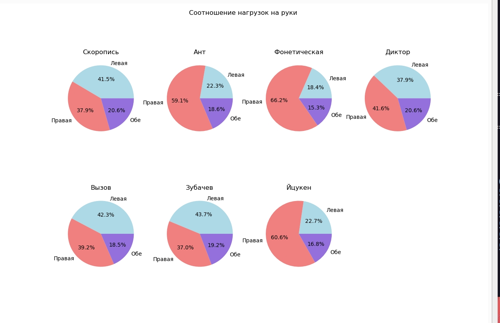
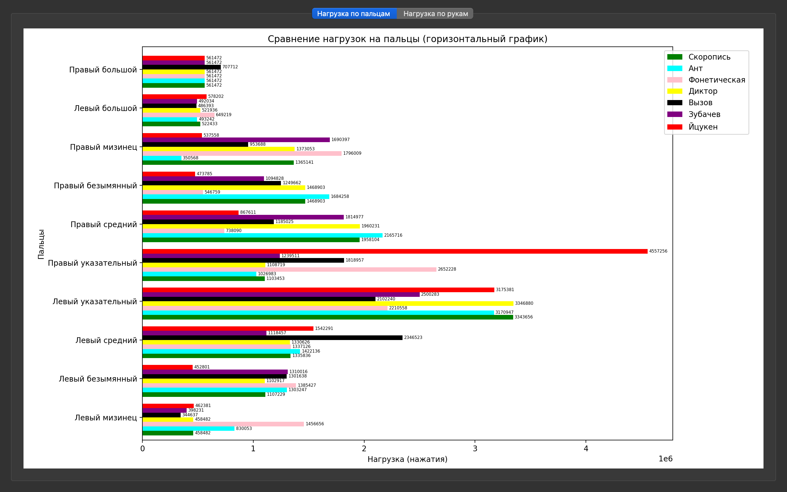

Модуль №3 — Визуализация анализа раскладок
📦 gui.py
Модуль реализует графический интерфейс на PyQt5 для визуализации результатов анализа раскладок клавиатуры. Он импортирует данные из main.py, строит столбчатые диаграммы и таблицы, отображающие нагрузку на пальцы и сравнение раскладок.
—
🎯 Назначение
Построение графиков нагрузки по пальцам
Сравнение раскладок по общему штрафу
Интерактивный выбор раскладки и текста
Отображение таблиц с процентной нагрузкой
—
🔣 Функции:
- load_all_results()
Загружает набор текстов и анализирует их для всех заданных раскладок клавиатуры, возвращая агрегированные результаты по нагрузке на пальцы и руки.
Включает:
чтение текстов:
voina_i_mir.txt— Война и мирsortchbukw.csv— Сортировка букв1grams.txt— Минимальные фразы
анализ раскладок:
skoropis— Скорописьant— Антrusfon— Фонетическаяdiktor— Дикторvyzov— Вызовzubachev— Зубачевytsuken— Йцукен
- Результат:
Словарь
all_results, где ключ — код раскладки, а значение — словарь:name(str): название раскладкиfingers(dict): суммарные счётчики по пальцамleft(int): общее количество нажатий левой рукойright(int): общее количество нажатий правой рукойboth(int): количество нажатий с модификаторами (Shift + Alt)
- Тип результата:
dict
Пример
results = load_all_results() # Выводим название раскладки print(results['ytsuken']['name']) # Сравниваем нагрузку на руки print("Левая:", results['ytsuken']['left']) print("Правая:", results['ytsuken']['right']) print("Обе:", results['ytsuken']['both'])
Результат
Йцукен Левая: 123456 Правая: 118765 Обе: 4321
- create_bar_plot(all_results)
Строит горизонтальный столбчатый график сравнения нагрузок на пальцы для разных раскладок клавиатуры.
- Параметры:
all_results (dict) –
агрегированные результаты анализа, полученные из функции
load_all_results(). Для каждой раскладки словарь содержит:name(str): название раскладкиfingers(dict): количество нажатий по каждому пальцуleft(int): общее количество нажатий левой рукойright(int): общее количество нажатий правой рукойboth(int): количество нажатий с модификаторами (Shift + Alt)
- Результат:
Объект графика с визуализацией нагрузок.
- Тип результата:
matplotlib.figure.Figure
Алгоритм работы:
Определяет параметры отображения: высоту столбцов, расстояние между группами пальцев, позиции по оси Y.
Находит глобальный максимум значений для корректного масштабирования.
Для каждой раскладки строит горизонтальные столбцы по нагрузке на пальцы.
Добавляет числовые подписи внутри столбцов.
Настраивает подписи осей, легенду и заголовок графика.
Особенности:
Использует список
finger_orderдля порядка пальцев.Использует словарь
finger_labels_ruдля русских подписей пальцев.Цвета раскладок задаются через словарь
layout_colors.
Пример
results = load_all_results() fig = create_bar_plot(results) fig.savefig("finger_loads.png")
Результат
# Будет создан файл finger_loads.png с графиком: # - по оси Y отображаются пальцы (с подписями на русском), # - по оси X — количество нажатий, # - для каждой раскладки отдельные цветные столбцы.
- create_pie_plot(all_results)
Строит набор круговых диаграмм (pie charts), показывающих соотношение нагрузок на левую руку, правую руку и обе руки (модификаторы) для каждой раскладки клавиатуры.
- Параметры:
all_results (dict) –
агрегированные результаты анализа, полученные из функции
load_all_results(). Для каждой раскладки словарь содержит:name(str): название раскладкиleft(int): общее количество нажатий левой рукойright(int): общее количество нажатий правой рукойboth(int): количество нажатий с модификаторами (Shift + Alt)
- Результат:
Объект фигуры с круговыми диаграммами.
- Тип результата:
matplotlib.figure.Figure
Алгоритм работы:
Создаёт сетку подграфиков (2 строки × 4 столбца).
Для каждой раскладки строит круговую диаграмму с тремя секторами:
«Левая» (lightblue),
«Правая» (lightcoral),
«Обе» (mediumpurple).
Добавляет подписи процентов (
autopct="%1.1f%%").Устанавливает заголовок диаграммы по названию раскладки.
Скрывает лишний пустой подграфик.
Добавляет общий заголовок для всей фигуры.
Пример
results = load_all_results() fig = create_pie_plot(results) fig.savefig("hand_loads_pie.png")
Результат
# Будет создан файл hand_loads_pie.png с набором круговых диаграмм: # - каждая диаграмма показывает долю нагрузок на левую, правую и обе руки # - для каждой раскладки отдельная диаграмма с заголовком # - последний пустой подграфик скрыт
—
🧩 Класс: MainWindow
- class MainWindow(parent=None)
Главное окно приложения «Анализатор раскладок клавиатуры».
Назначение:
Отображает результаты анализа раскладок клавиатуры в виде графиков.
Содержит вкладки для сравнения нагрузок:
по пальцам (горизонтальный столбчатый график),
по рукам (круговые диаграммы).
- Параметры:
parent (QWidget or None) – Родительский элемент Qt (опционально).
Пример
app = QApplication(sys.argv) win = MainWindow() win.resize(1300, 950) win.show()
Результат
# Будет открыто окно приложения «Анализатор раскладок клавиатуры» # с двумя вкладками: # - «Нагрузка по пальцам» (горизонтальный график) # - «Нагрузка по рукам» (круговые диаграммы)
🔧 Методы класса
- __init__(self)
Конструктор главного окна приложения «Анализатор раскладок клавиатуры».
Назначение:
Инициализирует интерфейс главного окна.
Загружает результаты анализа раскладок.
Создаёт вкладки для отображения графиков:
«Нагрузка по пальцам» (горизонтальный столбчатый график),
«Нагрузка по рукам» (круговые диаграммы).
- Параметры:
self (MainWindow) – Экземпляр класса
MainWindow.- Результат:
None
Алгоритм работы:
Устанавливает заголовок окна.
Создаёт основной вертикальный макет (
QVBoxLayout).Создаёт виджет вкладок (
QTabWidget).Загружает результаты анализа через
load_all_results().Добавляет две вкладки:
self.tab1— для графика нагрузок по пальцам,self.tab2— для графика нагрузок по рукам.
Инициализирует флаги:
self.bar_drawn = False— график по пальцам ещё не построен,self.pie_drawn = False— график по рукам ещё не построен.
Подключает обработчик переключения вкладок (
on_tab_change).Добавляет вкладки в основной макет и применяет его к окну.
Пример
app = QApplication(sys.argv) win = MainWindow() win.resize(1300, 950) win.show()
Результат
# Будет открыто окно приложения «Анализатор раскладок клавиатуры» # с двумя вкладками: # - «Нагрузка по пальцам» (горизонтальный график) # - «Нагрузка по рукам» (круговые диаграммы)
- on_tab_change(self, index)
Обработчик переключения вкладок в главном окне приложения.
Назначение:
Отслеживает смену активной вкладки в
QTabWidget.При первом открытии вкладки строит соответствующий график и добавляет его в макет вкладки.
- Параметры:
index (int) –
Индекс выбранной вкладки.
0 — вкладка «Нагрузка по пальцам»
1 — вкладка «Нагрузка по рукам»
- Результат:
None
Алгоритм работы:
Если выбрана вкладка «Нагрузка по пальцам» (
index == 0) и график ещё не построен:вызывает
create_bar_plot(self.results)для построения столбчатого графика,создаёт
FigureCanvasдля отображения графика,добавляет график в макет вкладки
self.tab1,устанавливает флаг
self.bar_drawn = True.
Если выбрана вкладка «Нагрузка по рукам» (
index == 1) и график ещё не построен:вызывает
create_pie_plot(self.results)для построения круговых диаграмм,создаёт
FigureCanvasдля отображения графика,добавляет график в макет вкладки
self.tab2,устанавливает флаг
self.pie_drawn = True.
Пример
# Переключение на вкладку «Нагрузка по пальцам» win.on_tab_change(0) # Переключение на вкладку «Нагрузка по рукам» win.on_tab_change(1)
Результат
# При первом переключении на вкладку: # - строится соответствующий график (столбчатый или круговой), # - график добавляется в макет вкладки, # - повторное построение не выполняется (флаги bar_drawn/pie_drawn предотвращают дублирование).
—
🚀 Точка входа
if __name__ == "__main__":
app = QApplication(sys.argv)
win = MainWindow()
win.resize(1300, 950)
win.show()
sys.exit(app.exec())
# Запускает графический интерфейс PyQt5 и отображает окно приложения.
Назначение:
Запускает графический интерфейс пользователя (GUI) на основе PyQt5.
Инициализирует главное окно приложения и отображает результаты анализа раскладок клавиатуры в виде графиков.
Алгоритм работы:
Создаёт экземпляр
QApplicationдля управления событиями Qt.Инициализирует главное окно
MainWindow.Устанавливает размеры окна (1300 × 950 пикселей).
Отображает окно на экране.
Запускает главный цикл обработки событий Qt через
app.exec().
Выходные данные:
None— блок не возвращает значения.Завершает работу приложения при закрытии окна с помощью
sys.exit().
Пример запуска
$ python gui.py
# Будет открыто окно приложения «Анализатор раскладок клавиатуры»
# с двумя вкладками:
# - «Нагрузка по пальцам» (горизонтальный график)
# - «Нагрузка по рукам» (круговые диаграммы)
—
🎨 Цветовая схема раскладок
Йцукен — красный (#FF0000)
Вызов — чёрный (#000000)
Диктор — желтый (#FFD700)
Русфон — розовый (#FF69B4)
Ант — голубой (#00BFFF)
Зубачев — фиолетовый (#800080)
Скоропись — зеленый (#228B22)
—
📌 Полученные графики
Нагрузка на руку
{kind=link}

—
Нагрузка на пальцы
{kind=link}

—